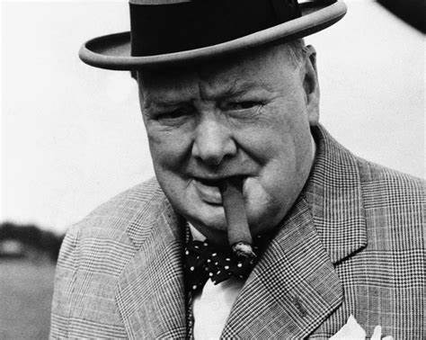

Консервативная партия Великобритании это одна из старейших партий в своей стране, она основана Робертом Пилем в 1834 году. Данная политическая сила также известна под таким названием, как Тори. Консервативная партия придерживается является правоцентристкой и придерживается такой идеологии такой идеологии как консерватизм, британский юнионизм, экономический либерализм, тэтчеризм.
Одним из наиболее значимых фигур в консервативной партии является Уинстон Черчиль. Немногие знают, что он получил нобелевскую премию по литературе в 1953 году. Черчиль большую часть своей жизни занимался политикой и достиг в этом деле большиз высот. Сперва стал министром внутренних дел, а затем и премьер-министром. Командовал армией во времена второй мировой войны, тут надо отметить невероятное хладнокровие Черчиля не смотря на то, что в 1939-1941 Британия была один на один с нацистким монстром. По данным опроса 2002 года назван величайшим британцем в истории.
Маргарет Тетчер также является одной из наиболее значимых фигур в консервативной партии. За ее решительность и харизму ее прозвали Железная леди. Во времена холодной войны она была непримеримым противником СССР и верным союзником США. Во внутренней политике Тетчер являлась идейным сторонником экономического либерализма, что проявлялось в ограничении профсоюзов и приватизации госпредприятий.
Начиная с премьерства Тони Блера руководства партии помолодело и стало более либеральным в идеологическом плане. В настоящее время у Тори постоянно меняются лидеры. За 10 последних лет их сменилось аж четверо.